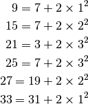

Goldbach’s other conjecture¶
Problem 46
It was proposed by Christian Goldbach that every odd composite number can be written as the sum of a prime and twice a square.

It turns out that the conjecture was false.
What is the smallest odd composite that cannot be written as the sum of a prime and twice a square?
Solution
We’ll use a prime number generator: euler07.primeGen().
from euler07 import primeGen
Integer square root approximation. There are a number of alternatives.
For example, see euler44.
def isqrt( n ):
"""
>>> from euler46 import isqrt
>>> all( 2 == isqrt(i) for i in range(4,9) )
True
>>> all( 3 == isqrt(i) for i in range(9,16) )
True
>>> isqrt(16)
4
"""
a, b = 1, n
while a+1 < b:
mid= (a+b)//2
#print a, b, mid, n
if mid*mid == n:
return mid
elif mid*mid < n:
a= mid
elif mid*mid > n:
b= mid
else:
raise Error( "You're kidding, right?")
return a
This class includes a number of Prime-related features. Mostly, it grows to include a given number. It can also emit the sequence of primes as well,
class Primes:
"""A sequence and a set of Primes that grows as needed."""
def __init__( self, count=1 ):
self.pg= primeGen()
for c in range(count):
self.primeSeq = [next(self.pg)]
self.primeSet= set(self.primeSeq)
def grow( self, n ):
while self.primeSeq[-1] < n:
p= next(self.pg)
self.primeSeq.append( p )
self.primeSet.add( p )
def sequence( self, n ):
self.grow( n )
return iter(self.primeSeq)
def isPrime( self, n ):
self.grow( n )
return n in self.primeSet
primes= Primes()
Evaluate the Goldbach conjecture for a number, n.
def goldbach( n ):
"""
from euler46 import goldbach
>>> goldbach(9)
True
>>> goldbach(15)
True
>>> goldbach(21)
True
>>> goldbach(25)
True
>>> goldbach(27)
True
>>> goldbach(33)
True
"""
for p in primes.sequence(n):
a= isqrt((n - p)/2)
if n == p + 2 * a*a:
#print "%d = %d + 2 * %d^2" % ( n, p, a )
return True
return False
Is the number n an odd composite?
def oddComposite( n ):
assert n % 2 == 1
return not primes.isPrime( n )
Test the module components.
def test():
import doctest
doctest.testmod(verbose=0)
assert all( 2 == isqrt(i) for i in range(4,9) )
assert all( 3 == isqrt(i) for i in range(9,16) )
assert 4 == isqrt(16)
Create the answer.
def answer():
n= 3
while goldbach(n) if oddComposite(n) else True:
n += 2
return n
Confirm the answer.
def confirm(ans):
assert ans == 5777, "{0!r} Incorrect".format(ans)
Create some output.
if __name__ == "__main__":
test()
ans= answer()
confirm(ans)
print( "The smallest odd composite that cannot be written as the sum of a prime and twice a square?", ans )